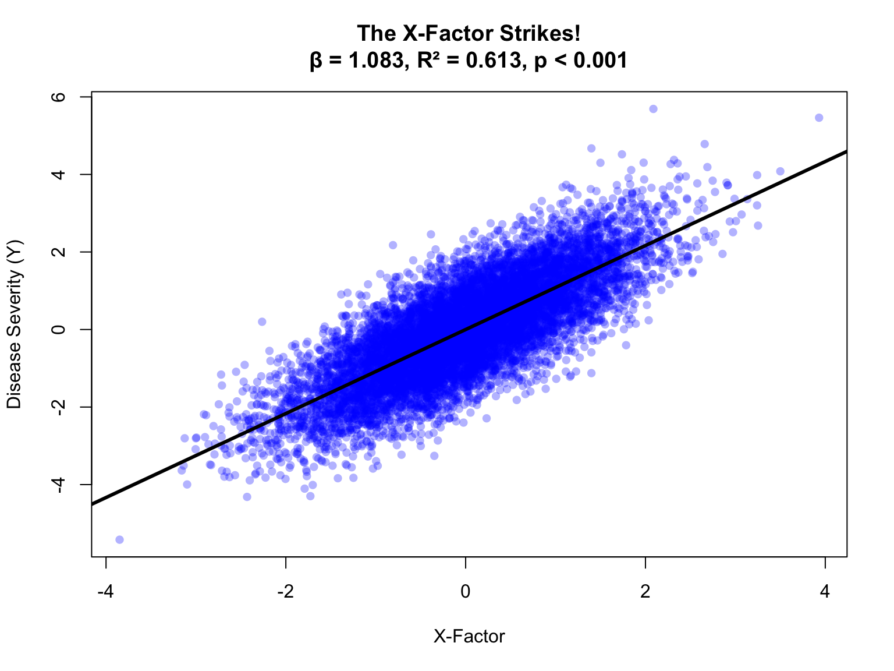
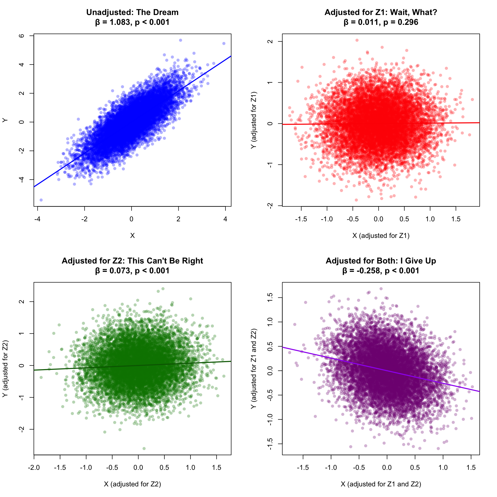
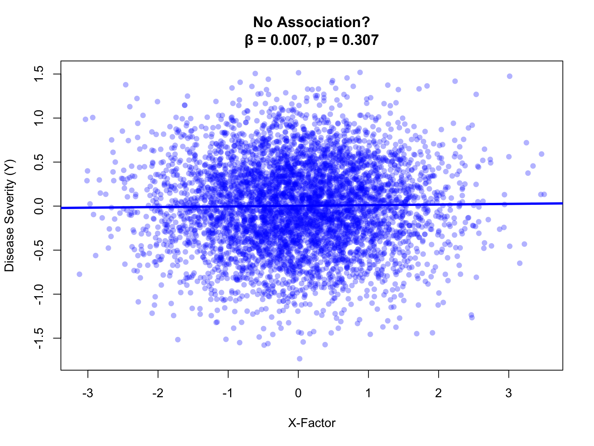
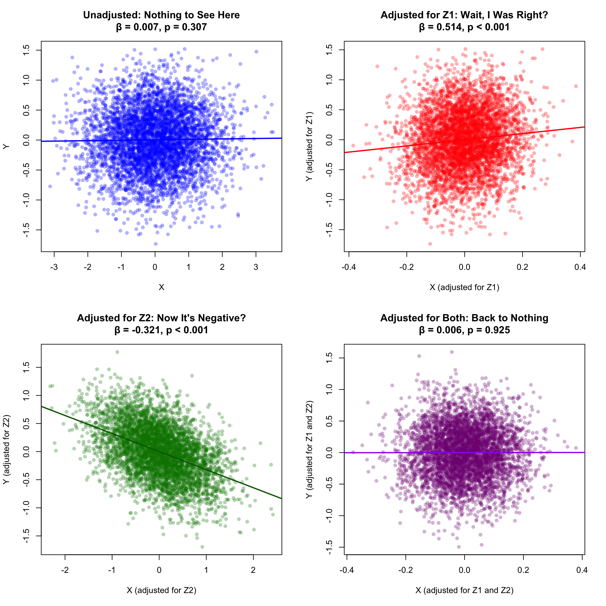
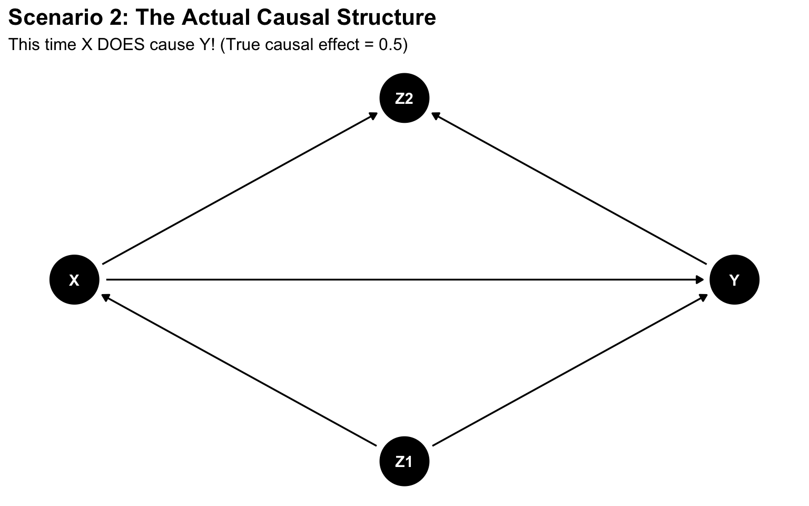

A Cautionary Tale: Why Your Associations Don’t Mean a Thing Without Causal Thinking
Or: How I Learned to Stop Worrying and Love the DAG
Author
Todd R. Johnson, PhD with help from Claude Sonnet 4.5
Published
November 13, 2025
Act I: Hubris
You’re an up-and-coming researcher who has hypothesized, based on reading a few papers (okay, the abstracts and maybe a figure or two), that a factor—let’s call it the X-factor—makes a horrible disease, call it Y, even worse. The stronger X is, you believe, the worse it makes Y.
This hypothesis feels right. It should be true. Your mentor mentioned something about it at a conference. A postdoc in another lab got a Cell paper on something vaguely related. Plus, you’ve already told people at department happy hour that you’re working on this, so you’re kind of committed now.
You’ve secured access to some observational data containing X and Y, along with a couple of other variables–Z1 and Z2–that one of your masters students collected. You’re not entirely sure what Z1 and Z2 represent, but the student says they’re “potentially relevant covariates,” which sounds important. And as every good researcher knows, when you have covariates, you control for them. That’s just good science.
But first things first. You need to establish the basic association. You load your data, type lm(Y ~ X), and hit Enter with the confidence of someone who has attended at least two statistics workshops.
Code
plot(X, Y, main =paste0("The X-Factor Strikes!\nβ = ", stats_marg$coef, ", R² = ", stats_marg$r2, ", ", stats_marg$p),pch =16, col =rgb(0, 0, 1, 0.3),xlab ="X-Factor", ylab ="Disease Severity (Y)")abline(fit_marginal, col ="black", lwd =3)

Figure 1: The moment of triumph
Fantastic! You just confirmed your hypothesis. Even better, look at that p-value! You are well on your way to getting a paper in the major journal Natura Medicine. You see visions of a cover article and news headlines touting your finding and the importance of lowering the X-factor to lessen subsequent disease severity. You imagine how pleased your department leadership will be, because you know they love positive press almost as much as they love money. They might even name a classroom after you without requiring a major donation.
But first, you have to adjust for other factors, because that is exactly what good papers do. You adjust for everything. That’s what “controlling for confounders” means, right?
So you first adjust for Z1…
Code
par(mfrow =c(2, 2))# Marginalplot(X, Y, main =paste0("Unadjusted: The Dream\nβ = ", stats_marg$coef, ", ", stats_marg$p),pch =16, col =rgb(0, 0, 1, 0.3),xlab ="X", ylab ="Y")abline(fit_marginal, col ="blue", lwd =2)# Adjusted for Z1resid_X_Z1 <-residuals(lm(X ~ Z1))resid_Y_Z1 <-residuals(lm(Y ~ Z1))plot(resid_X_Z1, resid_Y_Z1,main =paste0("Adjusted for Z1: Wait, What?\nβ = ", stats_Z1$coef, ", ", stats_Z1$p),xlab ="X (adjusted for Z1)", ylab ="Y (adjusted for Z1)",pch =16, col =rgb(1, 0, 0, 0.3))abline(lm(resid_Y_Z1 ~ resid_X_Z1), col ="red", lwd =2)# Adjusted for Z2resid_X_Z2 <-residuals(lm(X ~ Z2))resid_Y_Z2 <-residuals(lm(Y ~ Z2))plot(resid_X_Z2, resid_Y_Z2,main =paste0("Adjusted for Z2: This Can't Be Right\nβ = ", stats_Z2$coef, ", ", stats_Z2$p),xlab ="X (adjusted for Z2)", ylab ="Y (adjusted for Z2)",pch =16, col =rgb(0, 0.5, 0, 0.3))abline(lm(resid_Y_Z2 ~ resid_X_Z2), col ="darkgreen", lwd =2)# Adjusted for bothresid_X_both <-residuals(lm(X ~ Z1 + Z2))resid_Y_both <-residuals(lm(Y ~ Z1 + Z2))plot(resid_X_both, resid_Y_both,main =paste0("Adjusted for Both: I Give Up\nβ = ", stats_both$coef, ", ", stats_both$p),xlab ="X (adjusted for Z1 and Z2)", ylab ="Y (adjusted for Z1 and Z2)",pch =16, col =rgb(0.5, 0, 0.5, 0.3))abline(lm(resid_Y_both ~ resid_X_both), col ="purple", lwd =2)par(mfrow =c(1, 1))

Figure 2: The descent into madness
Act II: Confusion
Record scratch. Freeze frame.
What just happened?
When you adjust for Z1, your headline grabbing positive association vanishes into thin air
When you adjust for Z2, your association is still positive (phew!), though different
When you adjust for both, your association turns negative
You’re now staring at four completely different answers to the same question. Which one is “right”? Do you:
Report the unadjusted result and hope no reviewer asks about confounding?
Report whichever adjusted result supports your hypothesis?
Report all of them and claim “it’s complicated”?
Question your entire approach to science?
If you answered D, congratulations! You’ve just discovered that statistics without causal reasoning is like surgery without anatomy.
Act III: Revelation
Here’s what was actually happening in your data:
Code
dag <-dagitty('dag { Z1 [pos="2,1"] X [pos="1,2"] Y [pos="3,2"] Z2 [pos="2,3"] Z1 -> X Z1 -> Y X -> Z2 Y -> Z2}')ggdag(dag) +theme_dag() +labs(title ="Scenario 1: The Actual Causal Structure",subtitle ="Notice anything missing between X and Y?") +theme(plot.title =element_text(size =16, face ="bold"),plot.subtitle =element_text(size =12))
Figure 3: The truth hurts
Plot twist: There was no causal effect of X on Y at all. Zero. Zilch. Nada. That’s why you don’t see an arrow from X to Y in the Causal DAG (Directed Acyclic Graph) above.
Z1 was a confounder causing both X and Y, creating a spurious correlation
Z2 was a collider caused by both X and Y
When you adjusted for Z1, you correctly removed the confounding and revealed the truth: no effect
When you adjusted for Z2 (the collider), you created spurious associations through collider bias
When you adjusted for both, collider bias dominated, creating a negative association
The correct answer was the one that made you the most disappointed. Welcome to causal inference.
Code
library(knitr)results_df <-data.frame(Model =c("Marginal (unadjusted)", "Adjusted for Z1", "Adjusted for Z2", "Adjusted for both"),Beta =c(stats_marg$coef, stats_Z1$coef, stats_Z2$coef, stats_both$coef),R_squared =c(stats_marg$r2, stats_Z1$r2, stats_Z2$r2, stats_both$r2),P_value =c(stats_marg$p, stats_Z1$p, stats_Z2$p, stats_both$p),Interpretation =c("❌ Spurious due to confounding","✅ Correct: No causal effect","❌ Spurious due to collider bias","❌ Spurious due to collider bias" ))kable(results_df, digits =3, align ="lcccc",col.names =c("Model", "β", "R²", "p-value", "Interpretation"))
Table 1: Summary of Scenario 1 Results
Model
β
R²
p-value
Interpretation
Marginal (unadjusted)
1.083
0.613
p < 0.001
❌ Spurious due to confounding
Adjusted for Z1
0.011
0.850
p = 0.296
✅ Correct: No causal effect
Adjusted for Z2
0.073
0.799
p < 0.001
❌ Spurious due to collider bias
Adjusted for both
-0.258
0.889
p < 0.001
❌ Spurious due to collider bias
Act IV: Hope… and then Despair
Time is running out. Your annual review is in 6 months, and your productivity metrics are, to put it charitably, “concerning.” You need a paper. Not just any paper—a good paper. Preferably in a journal with an impact factor that will make your department chair’s eyes light up like a slot machine hitting triple sevens.
But then, fortune smiles upon you. Or so you think.
You discover that the graduate student who originally extracted the data from your institution’s large clinical database—as part of his master’s thesis, no less—had used an LLM to write the SQL code. ChatGPT, Claude, Gemini, who knows. And that code was wrong. Not subtly wrong. Not “off by a rounding error” wrong. Capital-W Wrong. The kind of wrong that sullies an entire master’s thesis.
You reprimand the student sternly (while secretly thanking the scientific gods that you caught this before publication). He promises to fix it, but then mumbles something about a graduation deadline and a job offer in industry that starts in two weeks. You do what any reasonable mentor would do: you graduate him anyway and fix the SQL yourself. At 11 PM. On a Saturday. While stress-eating cold pizza.
But now—now—you have new data. Correct data. The best data. Data extracted with proper SQL that you wrote yourself, tested twice, and validated against the data dictionary. Surely, with the right data, your hypothesis will finally prove true. The X-factor definitely makes disease Y worse. The original analysis was just poisoned by bad data extraction. That’s all it was.
You load the corrected dataset with the eager anticipation of someone who has convinced themselves that this time will be different. You check the marginal association first, already mentally drafting your Natura Medicine cover letter:
Code
plot(X, Y, main =paste0("No Association?\nβ = ", stats2_marg$coef, ", ", stats2_marg$p),pch =16, col =rgb(0, 0, 1, 0.3),xlab ="X-Factor", ylab ="Disease Severity (Y)")abline(fit2_marginal, col ="blue", lwd =3)

Figure 4: Nothing to see here?
Nothing. No association. Not even close to significant. Your hypothesis appears to be wrong.
But you remember that confounding can mask true effects, so you decide to adjust anyway…
Code
par(mfrow =c(2, 2))# Marginalplot(X, Y, main =paste0("Unadjusted: Nothing to See Here\nβ = ", stats2_marg$coef, ", ", stats2_marg$p),pch =16, col =rgb(0, 0, 1, 0.3),xlab ="X", ylab ="Y")abline(fit2_marginal, col ="blue", lwd =2)# Adjusted for Z1resid2_X_Z1 <-residuals(lm(X ~ Z1))resid2_Y_Z1 <-residuals(lm(Y ~ Z1))plot(resid2_X_Z1, resid2_Y_Z1,main =paste0("Adjusted for Z1: Wait, I Was Right?\nβ = ", stats2_Z1$coef, ", ", stats2_Z1$p),xlab ="X (adjusted for Z1)", ylab ="Y (adjusted for Z1)",pch =16, col =rgb(1, 0, 0, 0.3))abline(lm(resid2_Y_Z1 ~ resid2_X_Z1), col ="red", lwd =2)# Adjusted for Z2resid2_X_Z2 <-residuals(lm(X ~ Z2))resid2_Y_Z2 <-residuals(lm(Y ~ Z2))plot(resid2_X_Z2, resid2_Y_Z2,main =paste0("Adjusted for Z2: Now It's Negative?\nβ = ", stats2_Z2$coef, ", ", stats2_Z2$p),xlab ="X (adjusted for Z2)", ylab ="Y (adjusted for Z2)",pch =16, col =rgb(0, 0.5, 0, 0.3))abline(lm(resid2_Y_Z2 ~ resid2_X_Z2), col ="darkgreen", lwd =2)# Adjusted for bothresid2_X_both <-residuals(lm(X ~ Z1 + Z2))resid2_Y_both <-residuals(lm(Y ~ Z1 + Z2))plot(resid2_X_both, resid2_Y_both,main =paste0("Adjusted for Both: Back to Nothing\nβ = ", stats2_both$coef, ", ", stats2_both$p),xlab ="X (adjusted for Z1 and Z2)", ylab ="Y (adjusted for Z1 and Z2)",pch =16, col =rgb(0.5, 0, 0.5, 0.3))abline(lm(resid2_Y_both ~ resid2_X_both), col ="purple", lwd =2)par(mfrow =c(1, 1))

Figure 5: Through the looking glass
Act V: Understanding
The causal structure this time:
Code
dag2 <-dagitty('dag { Z1 [pos="2,1"] X [pos="1,2"] Y [pos="3,2"] Z2 [pos="2,3"] Z1 -> X Z1 -> Y X -> Y X -> Z2 Y -> Z2}')ggdag(dag2) +theme_dag() +labs(title ="Scenario 2: The Actual Causal Structure",subtitle ="This time X DOES cause Y! (True causal effect = 0.5)") +theme(plot.title =element_text(size =16, face ="bold"),plot.subtitle =element_text(size =12))

Figure 6: This time with feeling
Plot twist #2: X actually did cause Y (with a true causal effect of 0.5)!
Z1 was a negative confounder (suppressor), completely masking the true positive effect in the marginal analysis
When you adjusted for Z1, you revealed the true causal effect (~0.5)
When you adjusted for Z2 (collider), you created spurious negative bias
When you adjusted for both, the collider bias canceled out the true effect
Code
results2_df <-data.frame(Model =c("Marginal (unadjusted)", "Adjusted for Z1", "Adjusted for Z2", "Adjusted for both"),Beta =c(stats2_marg$coef, stats2_Z1$coef, stats2_Z2$coef, stats2_both$coef),R_squared =c(stats2_marg$r2, stats2_Z1$r2, stats2_Z2$r2, stats2_both$r2),P_value =c(stats2_marg$p, stats2_Z1$p, stats2_Z2$p, stats2_both$p),Interpretation =c("❌ Masked by negative confounding","✅ Correct: True causal effect ≈ 0.5","❌ Spurious due to collider bias","❌ Masked by collider bias" ))kable(results2_df, digits =3, align ="lcccc",col.names =c("Model", "β", "R²", "p-value", "Interpretation"))
Table 2: Summary of Scenario 2 Results
Model
β
R²
p-value
Interpretation
Marginal (unadjusted)
0.007
0.000
p = 0.307
❌ Masked by negative confounding
Adjusted for Z1
0.514
0.011
p < 0.001
✅ Correct: True causal effect ≈ 0.5
Adjusted for Z2
-0.321
0.319
p < 0.001
❌ Spurious due to collider bias
Adjusted for both
0.006
0.323
p = 0.925
❌ Masked by collider bias
Epilogue: The Moral of the Story
The Iron Law of Causal Inference
You cannot determine what to adjust for by looking at the data.
The decision of which variables to adjust for depends entirely on the causal structure (the DAG), not on p-values, effect sizes, or model fit statistics.
What you learned today:
Statistical association ≠ causation (you knew this, but now you feel it)
Lack of association ≠ no causation (confounding can completely mask real effects)
“Adjusting for everything” is not a strategy (“Trust the DAG, Luke”)
The same data can tell many stories depending on what you adjust for
You need a causal model (DAG) before you analyze data, not after
What Should You Actually Do?
Before you collect data, draw your hypothesized causal DAG based on:
Subject matter knowledge
Prior literature
Expert consultation
Biological/mechanistic reasoning
Then use your DAG to determine the minimal sufficient adjustment set needed to identify your causal effect. This is the only adjustment set you should use.
Tools that can help:
Code
# For Scenario 1 (no causal effect X -> Y)dag1 <-dagitty('dag { Z1 -> X Z1 -> Y X -> Z2 Y -> Z2}')cat("Scenario 1 - Valid adjustment sets to identify causal effect of X on Y:\n")
Scenario 1 - Valid adjustment sets to identify causal effect of X on Y:
# For Scenario 2 (X does cause Y)dag2 <-dagitty('dag { Z1 -> X Z1 -> Y X -> Y X -> Z2 Y -> Z2}')cat("\nScenario 2 - Valid adjustment sets to identify causal effect of X on Y:\n")
Scenario 2 - Valid adjustment sets to identify causal effect of X on Y:
In both scenarios, the answer is the same: adjust for Z1 only. Do not adjust for Z2 (the collider) and do not look at the marginal effect of X on Y (no adjustment), because in both scenarios their relationship is confounded by Z1.
Final Thought
“With great statistical power comes great responsibility to think causally.”
— Not Spider-Man, but should have been
Remember: The most dangerous analyses are those that give you the answer you wanted using methods you don’t understand.
Your p-value doesn’t care about causality. But you should.
Acknowledgments: No hypotheses were harmed in the making of this document. All data were simulated. Any resemblance to actual research practices is entirely intentional and deeply concerning.
Want to Learn More?
Recommended resources (roughly less to more complex):